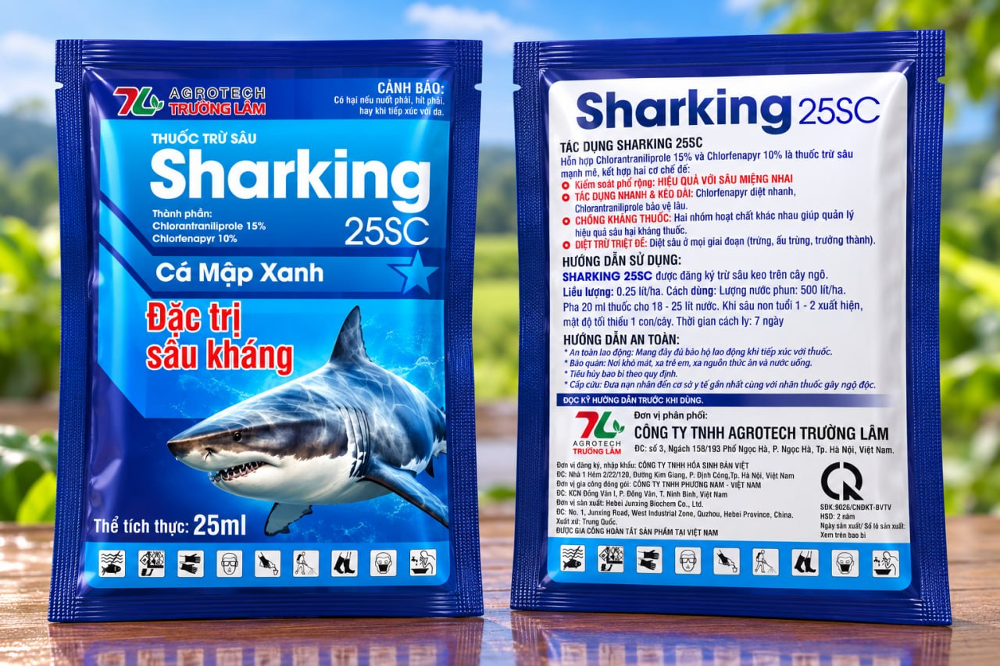

Phối hợp 2 cơ chếThuốc trừ sâu● Đang phân phối
Sharking 25SC
Hiệu quả với sâu miệng nhai
Chlorantraniliprole 15% + Chlorfenapyr 10% kết hợp tác động cơ và chuyển hóa năng lượng, ưu tiên kiểm soát sâu keo và nhóm sâu ăn lá.
Ưu tiên hữu hiệu01 Sâu keo mùa thu02 Sâu ăn lá · 03 Sâu non bộ cánh vảy